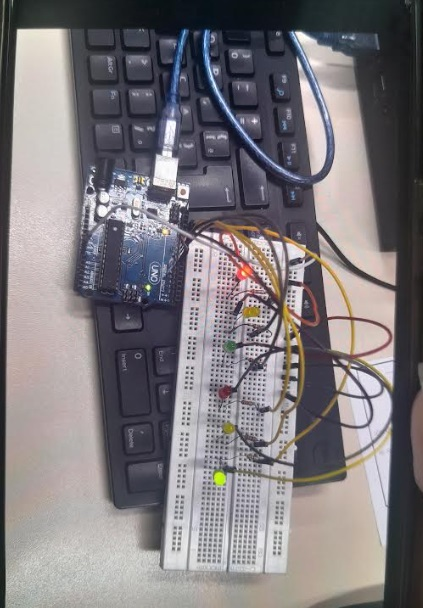

Programação do semáforo duplo – foto da montagem prática:

video da pratica:
print do código C++ da IDE ARDUÍNO:
fonte: autor
código C++ (texto):
// C++ code
//
void setup()
{
pinMode(8, OUTPUT);
pinMode(9, OUTPUT);
pinMode(10, OUTPUT);
pinMode(11, OUTPUT);
pinMode(12, OUTPUT);
pinMode(13, OUTPUT);
}
void loop()
{
digitalWrite(8, HIGH);
delay(7000); // Wait for 7000 millisecond(s)
digitalWrite(9, LOW);
digitalWrite(10, HIGH);
delay(2000); // Wait for 2000 millisecond(s)
digitalWrite(9, LOW);
digitalWrite(10, HIGH);
delay(5000); // Wait for 5000 millisecond(s)
digitalWrite(10, LOW);
delay(1000); // Wait for 1000 millisecond(s)
delay(1); // Wait for 1 millisecond(s)
digitalWrite(11, HIGH);
delay(7000); // Wait for 7000 millisecond(s)
digitalWrite(11, LOW);
digitalWrite(12, HIGH);
delay(2000); // Wait for 2000 millisecond(s)
digitalWrite(12, LOW);
digitalWrite(13, HIGH);
delay(5000); // Wait for 5000 millisecond(s)
digitalWrite(13, LOW);
delay(1000); // Wait for 1000 millisecond(s)
delay(1); // Wait for 1 millisecond(s)
}